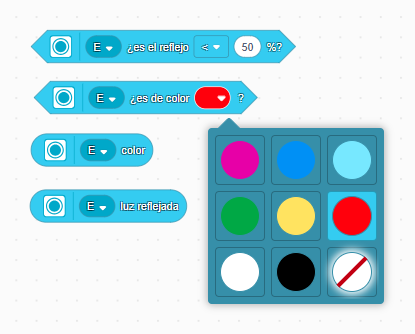

El sensor de color
Este sensor se basa la identificación del color de la luz que reflejan los objetos al ser iluminados por una luz blanca que incorpora el propio sensor. Se puede trabajar también con el porcentaje global de luz reflejada sin importar el color del que se trate. Por tanto, son dos modos de trabajo compatibles y que detallamos seguidamente.
|  |
Los bloques para trabajar con el sensor de color son lo que se muestran en la figura adjunta. El primero, se emplea para comprobar si la cantidad de luz reflejada supera o no alcanza un valor determinado. Se emplea principalmente para seguir líneas marcadas en un tapete o coger referencias en puntos concretos de su recorrido. También podemos saber qué cantidad de luz reflejada hay usando el último bloque. En realidad se puede aproximar a medir los grises existentes entre el blanco y negro. No medimos la cantidad de luz ambiente, se pide la luz reflejada, aunque por supuesto, la luz ambiente afecta a las mediciones del sensor. El otro modo de uso del sensor es para identificar alguno de los colores mostrados (CMY) y (RGB) más el blanco y el negro. También se puede especificar sin color (es decir, no hay un objeto próximo al sensor). No podremos identificar colores de pantallas digitales, sólo de objetos. |
Presentados los bloques con los que podemos trabajar para la identificación del colores, se proponen algunas tareas sencillas.